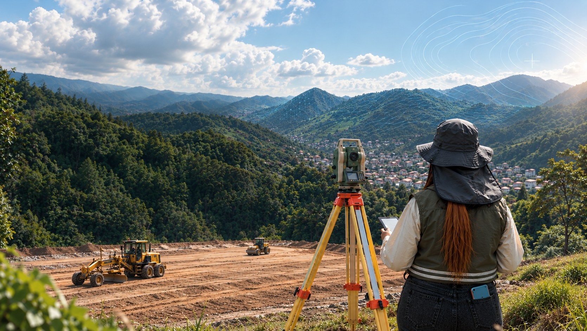
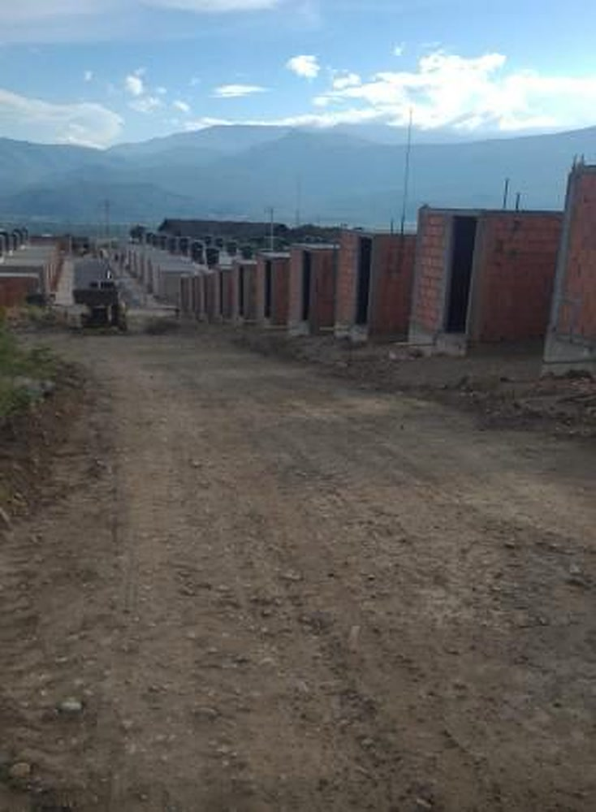
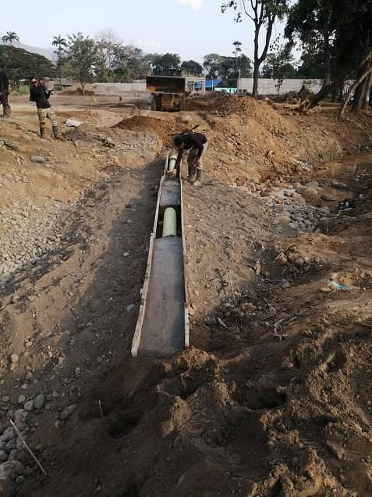
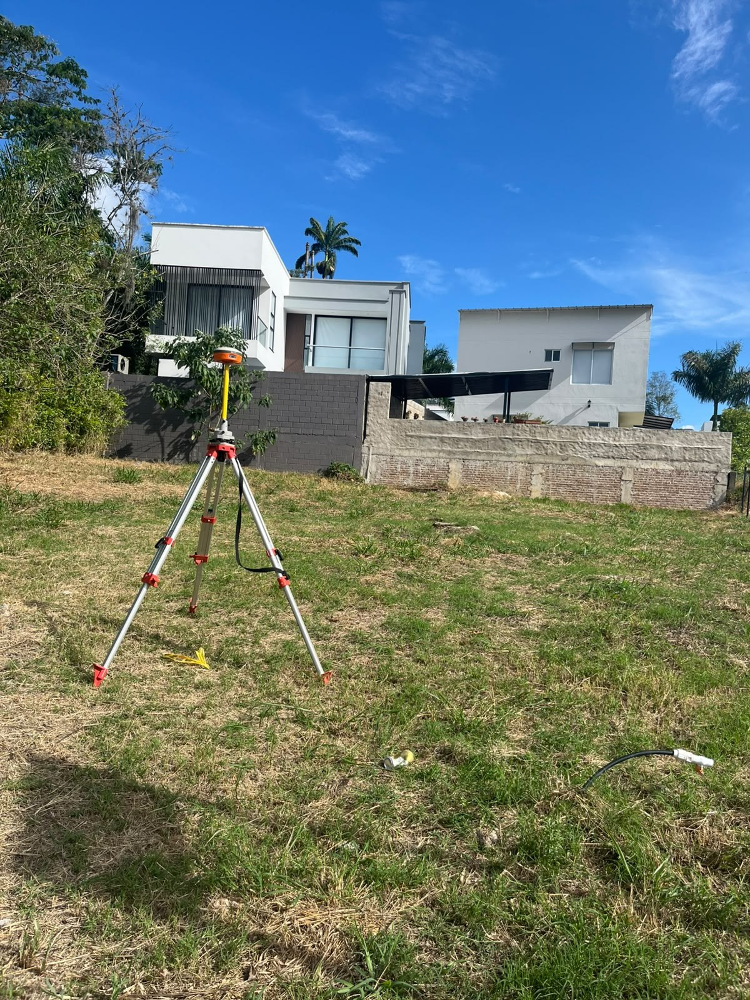
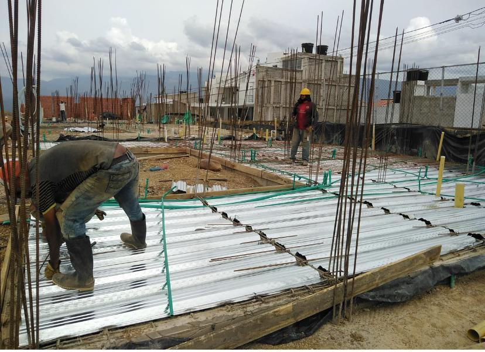

GJL Construcciones — Obra civil y topografía en Cúcuta, con precisión de punto exacto
Del movimiento de tierras a la entrega final
Acompañamos cada fase del proyecto de construcción, desde el levantamiento topográfico hasta el cierre documentado de la obra.
Construcción de obra civil
Viviendas, edificios comerciales e infraestructura urbana, de la cimentación a la entrega.
Ver servicio →Movimiento de tierras y cimentación
Excavación, nivelación, relleno y compactación; cimentaciones y estructuras de concreto.
Ver servicio →Obra blanca y acabados
Revestimientos, pintura, pisos, carpintería, electricidad e instalaciones hidráulicas.
Ver servicio →Topografía y geotecnia
Levantamientos con estación total y GNSS-RTK, estudios de suelos y mecánica de suelos.
Ver servicio →Ingeniería civil, eléctrica y mecánica
Diseño de vialidades, redes hidrosanitarias, instalaciones eléctricas y climatización.
Ver servicio →Gestión, supervisión y consultoría
Planificación, presupuestos, permisos, control de calidad y peritajes técnicos.
Ver servicio →Obras con registro fotográfico real
Una muestra de los proyectos que hemos ejecutado para clientes públicos y privados en Norte de Santander.

16 viviendas · Urbanización Tenerife
EntregadoNorte de Santander · Urbanizadora Bonaire S.A.S.

Redes de acueducto · Los Álamos
EntregadoChinácota, Norte de Santander
Brindar soluciones integrales en construcción, garantizando calidad, seguridad y cumplimiento, con tecnología, mano de obra calificada y un firme compromiso con la satisfacción del cliente.
Trabajo real en campo y en obra
Registro fotográfico propio de nuestros equipos de topografía y de los frentes de obra en ejecución.

Levantamiento GNSS-RTK · Cúcuta
Cimentación · Urb. Tenerife Movimiento de tierras
Movimiento de tierras Muro de contención
Muro de contención Estación total · Zona rural
Estación total · Zona rural Urbanismo · Vía interna
Urbanismo · Vía internaAsí avanzamos en cada obra
Un proceso técnico documentado, desde el reconocimiento del terreno hasta el cierre del proyecto.
Reconocimiento y topografía
Visita técnica, levantamiento del terreno y estudio de suelos antes de iniciar el diseño.
Cimentación y obra gris
Movimiento de tierras, cimentación y estructura de concreto o metálica.
Obra blanca y acabados
Instalaciones, revestimientos y acabados finales de la obra.
Entrega y cierre
Supervisión técnica, control de calidad y entrega formal del proyecto.
¿Tiene un proyecto de construcción o topografía pendiente?
Le respondemos con una propuesta técnica preliminar en máximo 48 horas.